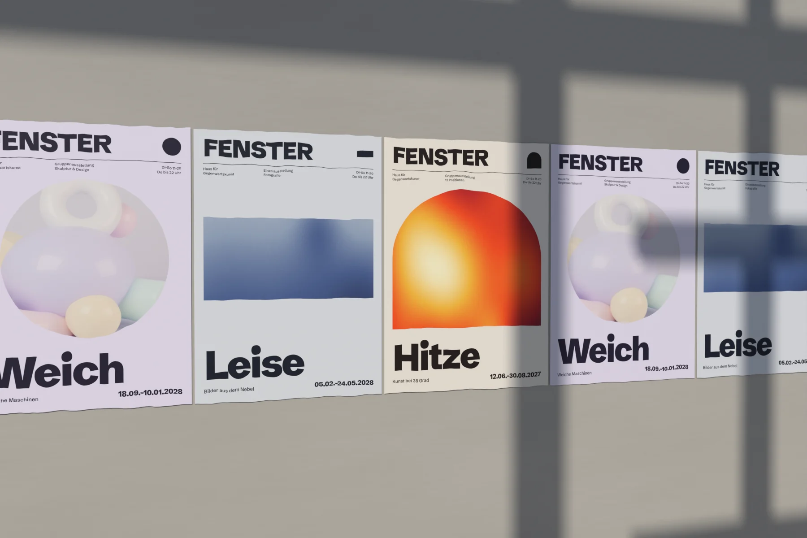
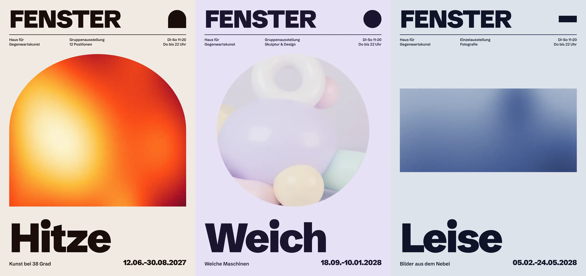
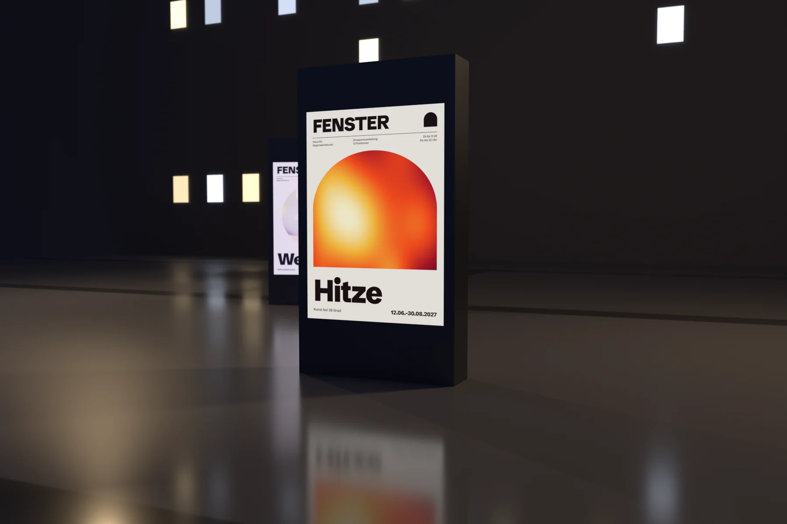
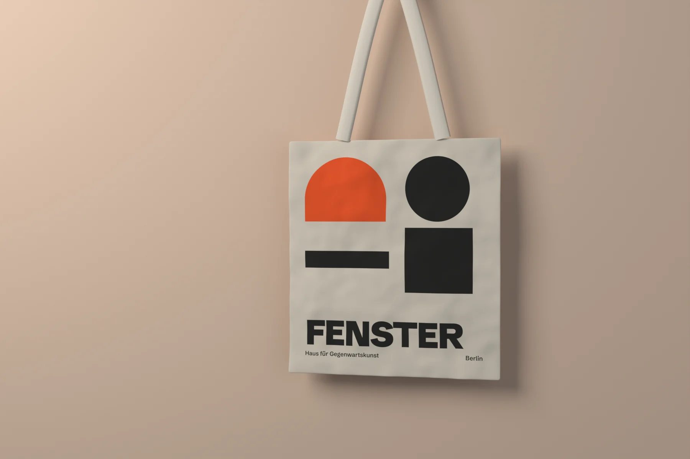
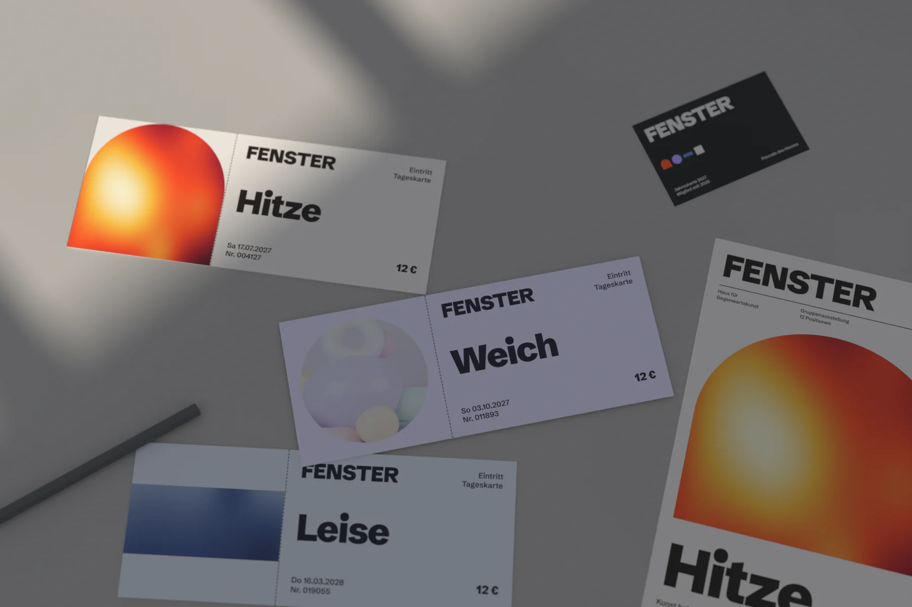
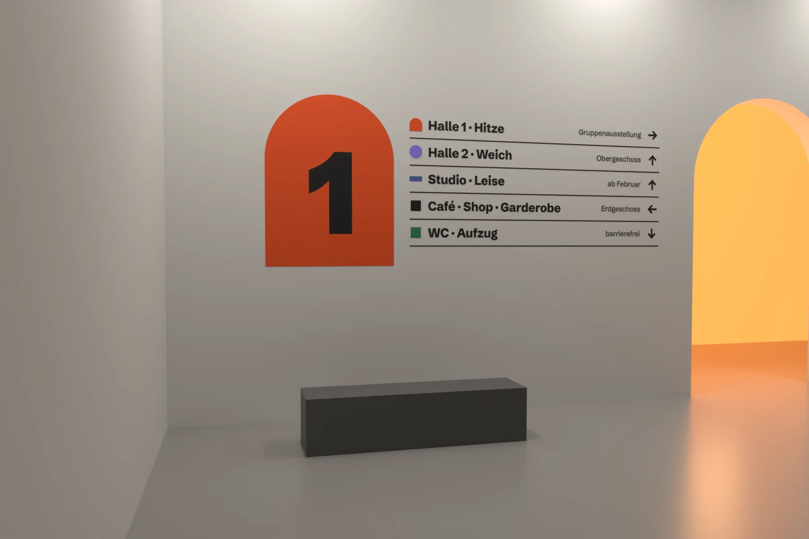
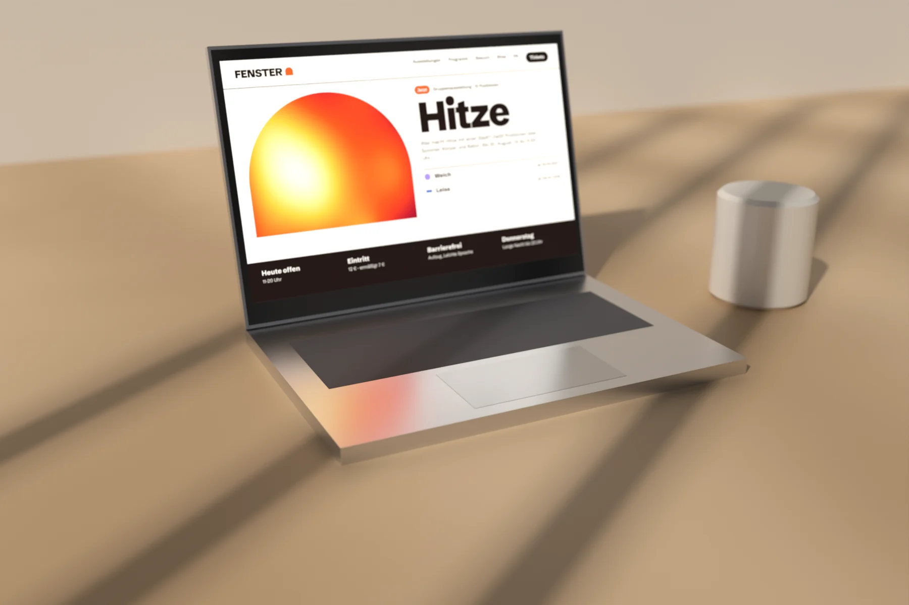

FENSTER is a fictional space for contemporary art in Berlin. Its exhibitions change every few months, so I built an identity that changes with them: each show gets its own window shape, and that shape frames the art on every poster, ticket, sign and screen.

A small art space has to compete with every other poster on the street. Each exhibition has its own artists and its own mood, but people should still recognise the house from across the road. Most institutions solve this with a fixed logo in a corner. I wanted the brand to live inside the artwork instead.
Every show can look different, from loud group shows to quiet photography.
One constant element that people spot on a wall, a ticket or a screen.
A small team should make a new poster set in a day, from one template.
A window is the oldest way to frame a view. FENSTER keeps a heavy grotesk wordmark and a window slot next to it. Each exhibition picks a shape for that slot: an arch, a circle, a slit or a square. The same shape crops the key image, marks the hall on the signs and sits on the ticket. Try it:
Switching the shape changes the whole poster without a redesign. That is what makes the system cheap: the team only picks a shape, an image and a colour.
The window slot is as tall as the cap height and sits one letter-space after the R. It is the only part of the logo that changes. In black and white use, the slot stays solid black.
Group shows. Open, generous, many voices.
Sculpture and objects. Something to walk around.
Photography and film. A wide, narrow view.
Archive, talks, the house itself.
Schibsted Grotesk Black, tight tracking. Exhibition titles are always one word and set as large as the format allows.
Schibsted Grotesk SemiBold for dates, hours and directions. One family keeps production simple.

Poster templateWordmark and info row at the top, window in the middle, one-word title at the bottom. Only shape, image and paper colour change.
I rendered every touchpoint in 3D to check how the system holds up in light, at a distance and at small sizes.

City light boxesAt night the window shape is the first thing you read, before any text.

Tote bagAll four shapes together become the house pattern for the shop.

Tickets and membership cardEach ticket carries its show’s window, so a stack of tickets reads as a year of visits.

WayfindingHalls are coded by shape and colour, not only by number. Arrows and words stay black for contrast.

WebsiteThe homepage is the current poster, made interactive: the window, the title, what is next, and the four things visitors ask first.